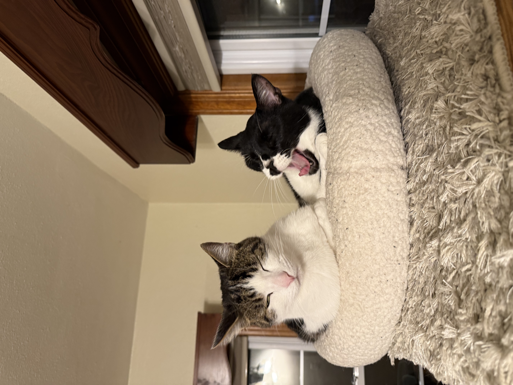
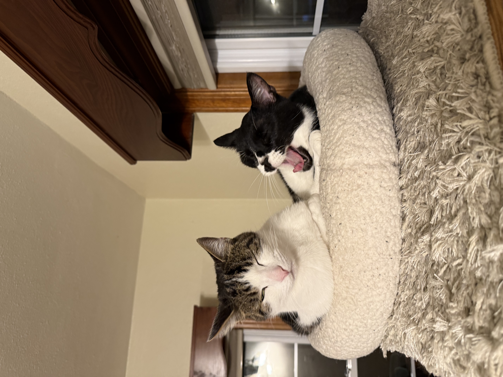

Current Pets Pictures
In the first picture, Duke is pictured cuddling with Neo. The second shows Bosco and Neo laying together in their bed on top of their cat tree.

In the first picture, Duke is pictured cuddling with Neo. The second shows Bosco and Neo laying together in their bed on top of their cat tree.
